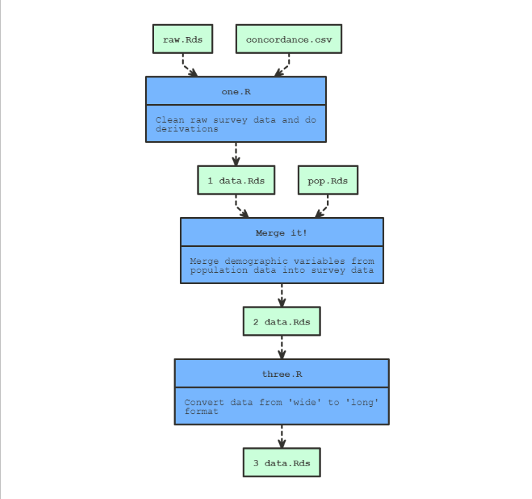
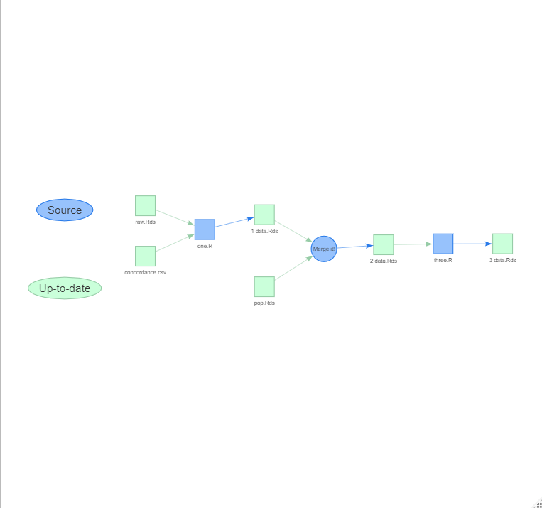

The goal of makepipe is to allow for the construction of make-like pipelines in R with very minimal overheads. In contrast to targets (and its predecessor drake) which offers an opinionated pipeline framework that demands highly functionalised code, makepipe is easy-going, being adaptable to a wide range of data science workflows.
A minimal example can be found here: https://github.com/kinto-b/makepipe_example
Installation
You can install the released version of makepipe from CRAN with:
install.packages("makepipe")And the development version from GitHub with:
# install.packages("devtools")
devtools::install_github("kinto-b/makepipe")Building a pipeline
To construct a pipeline, one simply needs to chain together a number of make_with_*() statements. When the pipeline is run through, each make_with_*() block is evaluated if and only if the targets are out-of-date with respect to the dependencies (and source file). But, whether or not the block is evaluated, a segment will be added to the Pipeline object behind the scenes. At the end of the script, once the entire pipeline has been run through, one can display the accumulated Pipeline object to produce a flow-chart visualisation of the pipeline. For example:
make_with_source(
note = "Clean raw survey data and do derivations",
source = "one.R",
targets = "data/1 data.Rds",
dependencies = c("data/raw.Rds", "lookup/concordance.csv")
)
make_with_recipe(
label = "Merge it!",
note = "Merge demographic variables from population data into survey data",
recipe = {
dat <- readRDS("data/1 data.Rds")
pop <- readRDS("data/pop.Rds")
merged_dat <- merge(dat, pop, by = "id")
saveRDS(merged_dat, "data/2_data.Rds")
},
targets = c("data/2 data.Rds"),
dependencies = c("data/1 data.Rds", "data/pop.Rds")
)
make_with_source(
note = "Convert data from 'wide' to 'long' format",
source = "three.R",
targets = "data/3 data.Rds",
dependencies = "data/2 data.Rds"
)
show_pipeline()
We can also get an interactive visNetwork widget:
show_pipeline(as = "visnetwork")
Once you’ve constructed a pipeline, you can ‘clean’ it (i.e. delete all registered targets):
p <- get_pipeline()
p$clean()Then, when you look again at the visualisation, the target nodes will be red not green since they’re out-of-date:

And then you can ‘rebuild’ to re-execute the entire pipeline and re-create the cleaned targets:
p <- get_pipeline()
p$build()